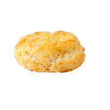

Buttered Biscuits

Description
This is a simple to follow recipe for lovely Biscuits
It is also my favorite recipe. Give it a try and let me know in the comments if you liked it aswell.
Ingredients
- 2 cups self-rising flour
- 1/2 cup butter or margarine
- 2/3 cup buttermilk
Steps
- Preheat an oven to 450 degrees F (230 degrees C). Grease a baking sheet or line it with parchment paper.
- Cut butter into flour until the size of small peas. Pour in the buttermilk and stir just until combined.
- Drop by rounded tablespoonfuls on prepared baking sheet. Bake until golden brown, about 10 minutes.